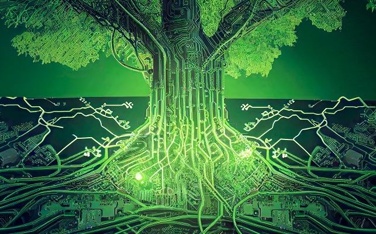

Estamos siendo parte de la revolución tecnológica con todo lo nuevo que ello implica. Las inteligencias artificiales ya se volvieron herramientas clave de nuestra cotidianeidad, y nos asombran con sus capacidades que avanzan día a día. Hoy en Bindi nos preguntamos: ¿Pueden las IA contribuir con la sustentabilidad? y la respuesta es ¡definitivamente sí! La combinación de innovación y conciencia ambiental está allanando el camino hacia un mundo cada vez más verde. Estas son algunas formas en las que las nuevas tecnologías están marcando la diferencia:
Inteligencia Artificial (IA) para la gestión eficiente de recursos: la IA está revolucionando la forma en que utilizamos los recursos naturales. Mediante el análisis de datos en tiempo real, la IA puede optimizar el consumo de energía, agua y otros recursos, reduciendo así nuestra huella ambiental. Desde la gestión inteligente de edificios hasta el control de la cadena de suministro, la IA está maximizando la eficiencia y minimizando el desperdicio.
Internet de las cosas (IoT) para una vida sostenible: el IoT conecta objetos cotidianos a la red, permitiendo la comunicación entre ellos y la recolección de datos. Esto tiene un gran potencial para la sustentabilidad, ya que los dispositivos inteligentes pueden monitorear el consumo de energía, regular la temperatura de manera eficiente y optimizar el uso de los recursos en el hogar y la industria. Imagina un hogar donde tus electrodomésticos se apaguen automáticamente cuando no los estás utilizando, ¡eso es IoT en acción!
Energías renovables y almacenamiento avanzado: Las tecnologías de energía renovable, como la energía solar y eólica, están experimentando un crecimiento exponencial. Gracias a la innovación en paneles solares más eficientes y turbinas eólicas de última generación, estamos generando más energía limpia que nunca. Además, el almacenamiento avanzado de energía, a través de baterías de larga duración y sistemas de gestión inteligente, está permitiendo un suministro constante y confiable de energía renovable.
Blockchain para la transparencia y trazabilidad: La tecnología blockchain está revolucionando la cadena de suministro al proporcionar una forma segura y transparente de rastrear el origen y el recorrido de los productos. Esto es especialmente importante en sectores como la alimentación y la moda, donde la trazabilidad es esencial para garantizar prácticas sostenibles y éticas. Con blockchain, los consumidores pueden tomar decisiones informadas y apoyar empresas comprometidas con la sustentabilidad.
Estas son solo algunas de las muchas formas en las que las nuevas tecnologías están impulsando la sustentabilidad. A medida que la innovación avanza, podemos esperar soluciones aún más creativas y efectivas para enfrentar los desafíos ambientales. Juntos, podemos aprovechar el poder de la tecnología para construir un mundo más sustentable.